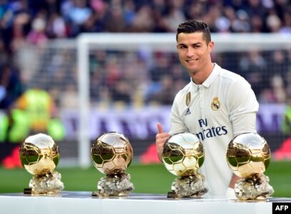
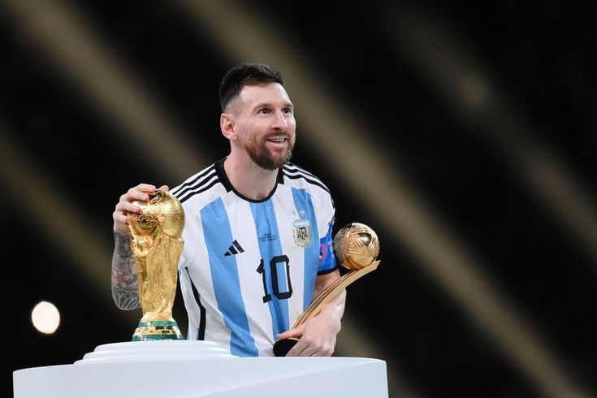

Cristiano Ronaldo
Bàn thắng: 604 (cả cấp câu lạc bộ lẫn đội tuyển quốc gia) tính tới 28/6/2017.

.Lionel Messi
Bàn thắng: 581 (cả cấp câu lạc bộ lẫn đội tuyển quốc gia) tính tới 22/7/2017.

.Họ là những cỗ máy săn bàn hoàn hảo. Trước thời điểm họ xuất hiện trên sân khấu bóng đá châu Âu, chưa có ai ghi được nhiều bàn thắng như họ. Trong một mùa giải, một mình họ có thể ghi được số bàn thắng nhiều hơn tổng số bàn thắng của không ít đội bóng ở La Liga. Và hằng năm họ lại lập ra những kỷ lục mới. Xét về số lượng, Ronaldo là cầu thủ ghi bàn xuất sắc nhất trên thế giới, kể cả khi chỉ tính số bàn thắng cho câu lạc bộ lẫn khi tính cả số bàn thắng trong màu áo đội tuyển quốc gia. Anh là tay săn bàn số Một của bóng đá châu Âu cấp câu lạc bộ (108 bàn). Anh cũng là cầu thủ ghi được nhiều bàn thắng nhất trong lịch sử EURO (29 bàn, tính cả bàn thắng ở vòng loại và vòng chung kết). Và anh cũng là cầu thủ ghi được nhiều bàn thắng nhất trong lịch sử đội tuyển Bồ Đào Nha (75 bàn).
Ngoài ra, anh còn là cầu thủ duy nhất ghi được ít nhất 50 bàn trong sáu mùa - chính xác là sáu mùa liên tiếp (từ 2010-11 tới 2015-16). Là cầu thủ duy nhất trong lịch sử Champions League ghi được ít nhất 10 bàn mỗi mùa trong sáu mùa liên tiếp (từ 2011-12 tới 2016-17). Anh từng chia sẻ kỷ lục ghi nhiều bàn thắng nhất trong một mùa giải Premier League với Alan Shearer (31 bàn trong 38 trận ở mùa 2007-08). Anh là cầu thủ duy nhất trong lịch sử Man United từng giành Chiếc Giày Vàng Châu Âu và phần thưởng FIFA Puskás cho bàn thắng đẹp nhất. Anh là người đầu tiên ghi được 40 bàn trong một mùa giải La Liga (2010-11). Anh là cầu thủ duy nhất từng ghi bàn trong sáu trận Clásico giữa Real Madrid và Barcelona liên tiếp. Anh đang giữ kỷ lục về số hat-trick ở giải Vô địch quốc gia Tây Ban Nha (tổng cộng 32), và kỷ lục về số bàn thắng trong một năm dương lịch cho Real Madrid (69 bàn, trong năm 2013). Anh là cầu thủ Real Madrid ghi được nhiều bàn thắng nhất trên sân khách trong lịch sử La Liga (119 bàn).
Leo Messi giữ kỷ lục về số bàn thắng ghi được trong các trận đấu chính thức trong một năm dương lịch (91 bàn cho câu lạc bộ và đội tuyển quốc gia trong năm 2012) và trong một mùa giải (82 bàn ở mùa 2011-12). Anh là cầu thủ ghi được nhiều bàn thắng nhất cho một câu lạc bộ trong một năm dương lịch (79 bàn trong 60 trận, năm 2012) và trong một mùa giải (73 bàn ở mùa 2011-12). Anh cũng giữ kỷ lục là cầu thủ ghi được nhiều bàn thắng nhất trong một trận đấu ở Champions League (5 bàn trong trận đấu với Bayer Leverkusen vào ngày 7/3/2012. Kỷ lục này hiện đã phải san sẻ với Luiz Adriano). Anh đã vượt qua Gerd Müller để nắm giữ kỷ lục về số lần đoạt ngôi Vua phá lưới Champions League (năm lần, từ 2008-09 tới 2011-12 và 2014-15). Lionel là cầu thủ ghi được nhiều bàn thắng nhất cho đội tuyển Argentina từ trước tới nay (74 bàn). Anh là đội trưởng Argentina ghi được nhiều bàn thắng nhất, cũng là cầu thủ trẻ nhất của Albiceleste ghi được bàn thắng ở một kỳ World Cup (Đức 2006). Ở La Liga, anh đang giữ các kỷ lục là cầu thủ ghi nhiều bàn thắng nhất trong lịch sử (349 bàn trong 382 trận), ghi nhiều bàn thắng nhất trong một mùa (50 bàn ở mùa 2011-12) và ghi nhiều bàn nhất trong các trận Clásico (23 bàn trong 34 trận). Anh là cầu thủ đầu tiên trong lịch sử bóng đá Tây Ban Nha ghi được 500 bàn thắng cho duy nhất một câu lạc bộ (tính cả các trận đấu chính thức lẫn giao hữu). Anh cũng là người ghi được nhiều bàn thắng nhất trong lịch sử Siêu Cúp Tây Ban Nha (12 bàn trong 15 trận). Và cuối cùng, anh là cầu thủ ghi được nhiều bàn thắng nhất cho FC Barcelona tính cả ở các trận đấu chính thức lẫn các trận giao hữu, cũng là cầu thủ ghi được nhiều bàn thắng nhất cho câu lạc bộ ở các giải đấu quốc tế.
Đáng nói hơn, Messi và Ronaldo đang chia sẻ với nhau những bốn kỷ lục: ghi nhiều bàn thắng nhất trong các trận đấu quốc tế trong một năm (25 bàn cho câu lạc bộ và đội tuyển quốc gia), lập nhiều hat-trick nhất trong lịch sử Champions League (7), lập nhiều hat-trick nhất trong một mùa giải Liga (8), và ghi bàn vào lưới tất cả các đối thủ trong một mùa bóng ở Liga. Ngoài ra, họ còn thay phiên nhau giữ kỷ lục về số bàn thắng ở Champions League (tính tới ngày 24/7/2017, CR7 vẫn đang dẫn trước Messi với tỉ số 105-94).
Những thống kê nói trên chắc chắn khiến nhiều người choáng ngợp, nhất là khi hai ngôi sao của chúng ta so kè sít sao trên quá nhiều khía cạnh. CR7 đang ghi được nhiều bàn thắng hơn ở thời điểm này, nhưng một phần nguyên nhân là vì anh bắt đầu chơi bóng ở cấp độ chuyên nghiệp sớm hơn Messi tới hai năm (anh lớn hơn hai tuổi). Giữa hai người có một sự tương đồng đầy thú vị: cả hai đều có bước nhảy vọt về khả năng ghi bàn ở mùa giải chuyên nghiệp thứ năm.
Với Leo và Cristiano, ghi bàn cũng tự nhiên như hít thở vậy. Tất nhiên, không phải bàn thắng nào cũng giống bàn thắng nào. Trong tất cả những bàn thắng mà họ đã ghi được, có những bàn thắng mang nhiều ý nghĩa hơn hẳn. Đó có thể là những bàn thắng quyết định số phận của một trận đấu. Là những bàn thắng đơn giản là quá đẹp. Hoặc là những bàn thắng mang tính biểu tượng. Và sau đây là sáu trong số những bàn thắng đáng nhớ nhất.
Leo Messi: Barcelona vs Getafe, bán kết Cúp Nhà Vua, 18/4/2017
“Sau 20 năm, 10 tháng và 26 ngày, Messi tái hiện bàn thắng của Maradona” là dòng tít được giật ra trang nhất của Marca, tờ nhật báo thể thao có trụ sở tại Madrid. Buổi sáng sau trận bán kết Cúp Nhà Vua 2007, báo chí ngập tràn những tiêu đề, bình luận và sáng tạo ngôn từ thuộc đủ thể loại, từ “Messidona”, tới “Bàn chân của Chúa”, và “Messi làm rúng động cả thế giới”.
Lý do khiến tất cả phát cuồng: vào phút 28 của trận đấu, Leo Messi đã chạy vượt qua một quãng đường lên tới hơn 60m, vượt qua bốn hậu vệ, vượt qua nốt cả thủ môn, trước khi sút bóng bằng chân phải - điều ít thấy ở anh - và ghi bàn. Với người xem, bàn thắng ấy lập tức khiến họ liên tưởng tới “bàn thắng thế kỷ” được Diego Maradona ghi trong trận đấu với Anh ở tứ kết World Cup 1986 diễn ra tại Mexico.
53.599 cổ động viên may mắn có mặt ở Nou Camp hôm ấy đã bật hết cả dậy, vớ lấy bất kỳ thứ gì xuất hiện trong tầm tay, từ các trang báo cho tới bản giới thiệu chương trình, từ khăn tay tới khăn quàng, để vẫy, biểu lộ sự phấn khích và ngưỡng mộ. Những người không có gì để vẫy vẫn có thể tham gia vào nghi lễ tập thể đang diễn ra bằng cách vỗ tay, vỗ cho tới khi hai tay đau rát thì thôi. Một màn tôn vinh toàn diện. Khi được đưa lên Youtube, bàn thắng lập tức gây ra nhiều tranh cãi. Người ta xem đi xem lại bàn thắng hàng nghìn lần, rồi chuyển sang xem cùng với bàn thắng của Maradona. Bàn thắng nào đẹp hơn? Từ các chuyên gia tới những cổ động viên, ai cũng có ý kiến của riêng mình. Trong khi đó, truyền thông so sánh hai bàn thắng dưới mọi góc độ có thể, tất nhiên không quên ngợi ca tài năng của Messi. “Có phải là Messi cố gắng bắt chước Maradona hay không? Có phải việc hai bàn thắng ấy giống nhau tới thế chỉ là một sự trùng hợp?” Nhân vật chính của pha bóng dường như không quá bận tâm. “Có thể hai pha bóng có nhiều điểm tương đồng. Tôi không rõ, tôi chỉ mới xem lại có một lần trên truyền hình,” Messi nói, “nhưng tôi không bao giờ nghĩ rằng bàn thắng của mình có thể giống như bàn thắng của Diego. Sau này người ta nói với tôi điều đó. Nhưng ở thời điểm pha bóng diễn ra, tôi chẳng nghĩ ngợi gì cả, chỉ cảm thấy niềm vui sướng của việc đã ghi được một bàn thắng thôi.”
Cristiano Ronaldo: Porto vs Manchester United, tứ kết Champions League, 15/4/2009
Trận lượt đi ở Old Trafford kết thúc với tỉ số hòa 2-2, nên trận lượt về trên sân Dragão sẽ quyết định số phận cặp đấu. United, lúc đó là nhà đương kim vô địch, ào lên tấn công ngay từ phút đầu tiên. Và họ chỉ mất 6 phút để có được bàn thắng quyết định. Ronaldo chính là người đã đưa United vào bán kết. Nhận bóng từ gần vòng tròn giữa sân, anh nhấn thêm vài nhịp trước khi tung ra một pha nã đại bác khó tin từ khoảng cách hơn 30m. Thủ thành Helton da Silva Arruda đã rướn người hết sức có thể, nhưng vẫn không thể ngăn cản được trái bóng găm vào góc lưới. Đồng đội lập tức lao tới ôm lấy Ronaldo để ăn mừng. Nhưng CR7 trông có vẻ nghiêm trọng, như thể cố gắng tránh ăn mừng một cách thái quá. Dù thế, anh hoàn toàn ý thức được rằng không phải ai cũng làm được một pha bóng như anh vừa làm. Đấy là lần đầu tiên trong lịch sử một đội bóng Anh đánh bại được Porto trên sân nhà.
Sir Alex Ferguson mô tả bàn thắng của Cristiano là “tuyệt diệu” và “đầy cảm xúc”. Bàn thắng sau đó đã giành giải FIFA Puskás - giải thưởng dành cho bàn thắng đẹp nhất trong năm mang tên huyền thoại Ferenc Puskás - trong lần đầu tiên giải này được trao. Trong danh sách rút gọn 10 bàn thắng đẹp được các chuyên gia đưa ra năm đó, bàn thắng của Ronaldo nhận được 17,68% số phiếu bầu từ các cổ động viên. CR7 nhận giải từ Erzsébet Puskás, người vợ góa của huyền thoại bóng đá Hungary, cựu ngôi sao của Real Madrid và một trong những cây săn bàn xuất sắc nhất thế kỷ XX. “Tôi không nghĩ là hôm nay mình sẽ giành được giải thưởng gì,” Ronaldo nói sau lễ trao giải. Vài năm sau, cũng bàn thắng ấy đã được bầu chọn là bàn thắng đẹp thứ sáu trong dịp kỷ niệm UEFA tròn 60 năm tuổi. Tuy nhiên, nếu bạn hỏi Ronaldo bàn thắng nào là đẹp nhất trong sự nghiệp, thì anh sẽ không chọn bàn thắng đó, mà là bàn thắng ngay sau đây...
Cristiano Ronaldo: Barcelona vs Real Madrid, La Liga 2011-12, 21/4/2012
Đó là bàn thắng mang về chức vô địch La Liga. Thời điểm là 8 giờ tối. Địa điểm là Nou Camp. Lần đầu tiên kể từ năm 2008-09, Real Madrid bước vào giai đoạn quyết định của mùa giải với vị trí cao hơn Barcelona trên bảng xếp hạng. Họ đang có nhiều hơn đội bóng của Guardiola 4 điểm, 85 so với 81, đủ để đặt mục tiêu giành chức vô địch ngay trên sân của đối thủ và kết thúc ba năm thống trị khó tin của họ. Tất cả sự chú ý được dồn vào Ronaldo và Messi. “Cuộc chiến ở La Liga không phải là chuyện của hai đội bóng, mà là của hai ngôi sao ấy,” tờ nhật báo thể thao có xu hướng thân Barça, Sport, nhận định. Cũng không khó để hiểu vì sao: Chính Ronaldo và Messi là những người đã gánh cả đội bóng của họ lên vai bằng những màn trình diễn hết sức ấn tượng trong cả mùa giải vừa qua. Cả hai đều ghi được 41 bàn sau 32 trận ở Liga, cân bằng kỷ lục mà Ronaldo lập ở mùa giải 2010-11. “Chưa ai có cơ hội được chứng kiến điều tương tự. Chưa bao giờ trong lịch sử, La Liga được chứng kiến cùng lúc hai ngôi sao xuất chúng như vậy,” vẫn là nhận định của Sport. Trừ chức vô địch Cúp Nhà Vua năm 2011, Ronaldo đã thua trong gần như mọi cuộc tranh đoạt danh hiệu với Messi - dù là ở Man United hay Real Madrid. Nhưng lần này thì khác. Và chính Ronaldo là người làm nên sự khác biệt. Anh ghi bàn thắng quyết định trong chiến thắng 2-1 của Real, đưa đội bóng của Mourinho vượt lên dẫn trước 7 điểm so với đối thủ. Khoảng cách đó đủ để Real có thể yên tâm là chức vô địch sẽ không thoát khỏi tay họ. Bàn thắng được ghi ở phút 73, không lâu sau khi Alexis Sánchez ghi bàn gỡ hòa và mở ra hi vọng về một màn ngược dòng cho Barça. Mesut Özil nhận bóng từ Di María ở cánh phải, gần vạch giữa sân, và nhanh chóng tung ra một cú chọc khe cho Ronaldo thoát xuống. Cầu thủ người Bồ Đào Nha dùng tốc độ vượt qua Mascherano và đối mặt với Víctor Valdés. Sau đẩy bóng thêm một nhịp về bên phải để lấy góc, trước khi đánh bại thủ môn của Barça với một pha dứt điểm gọn ghẽ vào góc gần. Ronaldo ăn mừng bằng cách chạy về phía các cổ động viên của Barça và ra dấu cho họ hãy bình tĩnh lại, học theo cách ăn mừng của Raúl trước đây. “Bình tình, bình tĩnh, vẫn còn tôi ở đấy,” anh hét lên một cách phấn khích, hiểu rằng giá trị của bàn thắng mà mình vừa ghi lớn đến thế nào. Trong buổi họp báo sau trận, anh nói: “Đó là một bàn thắng quan trọng, nhưng chiến thắng cho toàn đội vẫn quan trọng hơn.” Một lần nữa, Ronaldo lại ghi bàn ở Nou Camp. Đáng nói hơn, bàn thắng lần này đã giúp chấm dứt ba năm trắng tay của Real Madrid. Theo cách mà báo chí Madrid nhận định, thì anh cuối cùng cũng đã hạ bệ được Messi.
Leo Messi: Barcelona vs Bayern Munich, bán kết Champions League, 6/5/2015
“Những bàn thắng siêu phàm như thế nhắc nhở chúng ta, một lần nữa, rằng anh ấy chính là người giỏi nhất. Có anh ấy trên sân, chúng tôi có thể tin tưởng vào một thắng lợi.” Đó là những gì Andrés Iniesta đã nói, và tất nhiên là anh đang nói về Messi. Ngôi sao người Argentina vừa quyết định số phận trận bán kết với Bayern Munich, đội bóng đang được dẫn dắt bởi Pep Guardiola, người đã cùng Messi trải qua những năm tháng đẹp nhất trong sự nghiệp của anh. Nhưng không chỉ đóng vai ngôi sao, Messi còn ghi một trong những bàn thắng ấn tượng nhất trong sự nghiệp. Bàn thắng đó được các độc giả của báo điện tử Marca bầu chọn là bàn thắng đẹp nhất trong mùa giải 2014-15.
Khoảnh khắc thiên tài đến trong hiệp hai. Tới phút 77, khi tỉ số vẫn là 0-0, Dani Alves cướp được bóng bên cánh phải. Anh chuyền cho Messi, người đã có một pha dứt điểm chính xác từ ngoài vòng cấm. 1-0 cho Barça. Nhưng đó vẫn chưa phải là bàn thắng mà chúng ta đang nói tới. 3 phút sau, Messi có bóng trong vòng cấm của Bayern và đối mặt với Jerome Boateng. Động tác giả của Messi ảo diệu tới mức khiến cho hậu vệ người Đức chôn chân rồi đổ gục xuống sân như thể bị ai bắn. Messi tiếp tục dẫn bóng xuống, và, với một pha chạm bóng siêu đẳng bằng chân phải, nhẹ nhàng bấm trái bóng qua đầu của thủ thành Manuel Neuer. Thực sự là một kiệt tác. Các đồng đội lao tới Messi ăn mừng trong phấn khích, trong khi sân Nou Camp thì như nổ tung. Trận đấu kết thúc với tỉ số 3-0; bàn thắng thứ 3 được ghi do công của Neymar sau một pha kiến tạo của Messi.
“Có Messi trên sân đương nhiên mọi chuyện dễ dàng hơn nhiều. Chẳng có chuyện gì là anh ấy không thể làm được. Chúng tôi không ngạc nhiên lắm vì đã được nhắc nhở hằng ngày rằng anh ấy ở một trình độ khác với phần còn lại,” huấn luyện viên Luis Enrique của Barça, người đã trải qua một mối quan hệ đầy thăng trầm với Messi trong cả giai đoạn trước của mùa giải, nhận xét. Ngay cả các cổ động viên Real, ít nhất là một vài trong số họ, cũng phải thừa nhận bàn thắng của Messi là quá siêu đẳng. “Hôm nay tôi phải ngả mũ trước anh ta!”, tay đua từng hai lần vô địch giải đua xe đường trường thế giới Darka Rally đồng thời là một fan cuồng của Real, Carlos Sainz, viết trên Twitter.
Với cá nhân Messi, đấy là một khoảnh khắc đáng nhớ trên hành trình tới chức vô địch Champions League thứ tư trong sự nghiệp.
Cristiano Ronaldo: Bồ Đào Nha vs Wales, bán kết EURO 2016, 6/7/2016
76,2cm... Cú bật nhảy khó tin của CR7 đã nâng anh lên cao hơn cả khung thành của Wayne Hennessey. Các định luật về trọng lực bị thách thức. Ronaldo, theo đúng nghĩa đen, đang bay. “Cảm giác giống như khi chúng ta xem một ngôi sao bóng rổ thực hiện một cú úp rổ,” tờ Daily Mail so sánh. Toàn bộ pha bóng chỉ diễn ra trong vòng có vài giây: Bồ Đào Nha được hưởng một quả phạt góc, Raphaël Guerreiro tạt, và Cristiano mở tỉ số trong sự há hốc của cả sân vận động. Đó là phút 50 của trận bán kết EURO 2016 diễn ra ở Pháp giữa Bồ Đào Nha và Xứ Wales. Cú đánh đầu đưa bóng găm vào lưới ở tốc độ hơn 72km/h, và nhanh chóng có mặt trong top 10 bàn thắng đẹp nhất của giải đấu. Chỉ 3 phút sau đó, Ronaldo kiến tạo cho Nani nâng tỉ số lên 2-0. Số phận đã an bài: Bồ Đào Nha sẽ có mặt trong trận chung kết rất được chờ đợi với chủ nhà Pháp. Nhưng ngoài bàn thắng, Ronaldo còn để lại một ấn tượng rất đẹp khác, khi tới an ủi người đồng đội ở Real Madrid, Gareth Bale. Sau này anh kể lại: “Tôi chúc mừng anh ấy vì những điều khó tin mà Wales đã làm được. Họ chính là một phát hiện của giải đấu. Phần còn lại trong cuộc nói chuyện giữa chúng tôi, tôi xin giữ cho riêng mình.”
Lionel Messi: Barcelona vs Roma, vòng bảng Champions League, 24/11/2015
Trận đấu ở Nou Camp chứng kiến Leo tái xuất sân cỏ sau sáu tuần dưỡng thương... và anh đã tái xuất theo cách rực rỡ nhất. Anh ghi 2 trong tổng số 6 bàn thắng của đội nhà (tỉ số chung cuộc là 6-1). Riêng bàn đầu tiên đã khiến các khán đài bật hết cả dậy. Thực tế thì UEFA đã đưa bàn thắng này vào danh sách bầu chọn 10 bàn thắng đẹp nhất của Champions League trong mùa giải đó, còn giới truyền thông thì gọi nó là một “kiệt tác của lối chơi đồng đội”. Tất cả các cầu thủ Barça đều chạm bóng trong tình huống dẫn tới bàn thắng. Tổng cộng đã có 27 cú chạm trong vòng 75 giây. Lionel chính là người kết thúc chuỗi chuyền bóng hoàn hảo đó với một pha bấm bóng sắc lẹm qua người của thủ thành Roma, Wojciech Szczesny. “Ave Messi, và xin chào những người khốn khổ,” nhật báo thể thao Marca bình luận về màn trình diễn ảo diệu đã đưa FC Barcelona có mặt ở vòng 16 đội trong số báo ra ngày hôm sau.